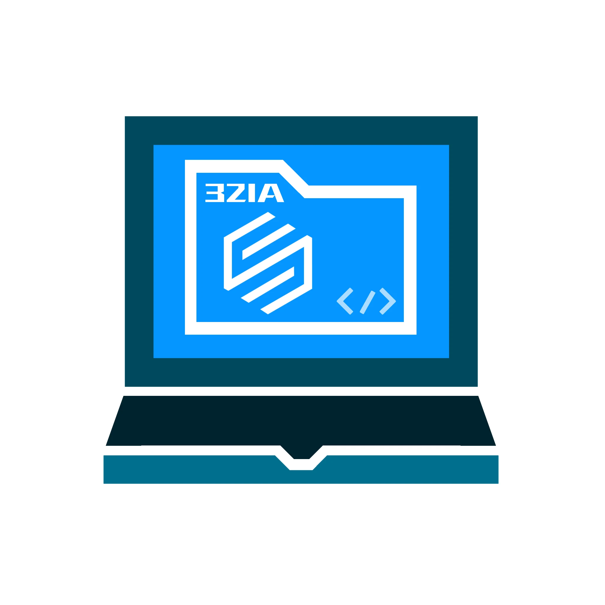
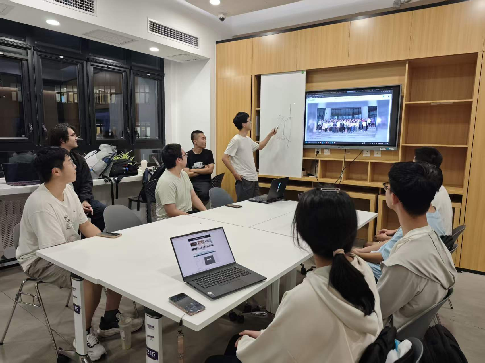

春季学期 · 策略对抗
THUAI 人工智能挑战赛
用 C++ 或 Python 编写 AI 策略，操控游戏角色进行对抗。让每一次决策，成为赛场上的胜负手。
THUAI01

EESAST/软件部
清华大学电子工程系学生科协
从第一行代码，到共同完成的作品。
我们致力于通过软件技术服务全系同学，面向零基础同学开展系统培训，在项目实践、技术交流与团队协作中，体验编程与软件创新的乐趣。
探索我们的实践01 / COMPETITIONS
让想法走出编辑器，
在真实的挑战中生长。
春季学期 · 策略对抗
用 C++ 或 Python 编写 AI 策略，操控游戏角色进行对抗。让每一次决策，成为赛场上的胜负手。
寒假开发 · 春季展示
面向全校本科生，不限定赛题。从游戏到实用工具，把天马行空的创意，写成真正运行的软件。
暑假 · 数字电路实践
在 Minecraft 的方块世界里，搭建数字电路、设计计算单元，让课本里的逻辑成为眼前的创造。
03 / LEARN & CREATE
面向零基础同学，也向全校同学开放。围绕游戏开发与网站建设中的常用工具展开，为维护科协网站、开发 THUAI 打下基础。
聚焦项目开发流程与工具链，为参赛者提供前置技术引导，帮助零基础或基础薄弱的同学进入开发状态，独立完成软件作品。
04 / LIFE IN SOFTWARE
部会里的讨论，屏幕前的协作，
都是经验传承的日常。
OUR RESPONSIBILITIES
01科协网站开发、维护与技术支持
02软件赛事组织与技术支持
03软件开发培训与技术经验分享
04技术文档维护与 SAST Weekly 投稿
05大型软件项目开发与技术服务
06部内培养、实践与开发经验传承